ChatGPT, Gemini, Perplexity의 "Deep Research"가 내놓는 보고서는 잘 쓰였지만 대개 글뿐이다. 그런데 사람이 쓰는 진짜 리서치 보고서를 떠올려 보자. 재무 분석에는 추세 차트가, 시장 보고서에는 점유율 파이가, 기술 문서에는 아키텍처 다이어그램이 박혀 있다. 그림은 장식이 아니라 근거이자 설명 수단이다.
이 글은 두 가지 질문을 따라간다. 첫째, 딥리서치가 보고서를 쓸 때 이미지를 어떻게 넣는가 — 직접 그리는가(차트 생성), 웹에서 가져오는가(이미지 검색), 그리고 그게 본문 주장과 진짜 맞물리는지 어떻게 검증·평가하는가. 둘째, 한 걸음 더 나아가 사람마다 잘 이해하는 시각화가 다른데, 독자에 맞춰 그림을 다르게 줄 수 있는가 — 시각화의 personalization 문제다.
- Multimodal DeepResearcher (arXiv:2506.02454) — 차트를 직접 생성하는 text-chart interleaved 보고서
- Deep-Reporter (arXiv:2604.10741) — 실제 이미지를 검색해 넣는 multimodal RAG
- TVIR (arXiv:2606.02320) — 검색+생성 통합, 텍스트·시각 dual-path 평가
- Ptah (arXiv:2605.29861) — Visual Working Memory와 verifier로 신뢰성 검증
- MMDeepResearch-Bench (arXiv:2601.12346) — 멀티모달 딥리서치 평가 벤치마크
- Drillboards (arXiv:2410.12744) — 독자 expertise에 맞춰 적응하는 시각화 대시보드
- StoryLensEdu (arXiv:2602.17067) — 학습자 개인화 narrative 리포트
Part 0 — Multimodal Deep Research란 무엇인가
Deep Research(DR)는 질문 하나를 받아 여러 step에 걸쳐 웹을 검색·추론하고, 인용이 달린 long-form 보고서를 생성하는 패러다임이다. 그런데 지금까지의 DR은 출력이 거의 글뿐이었다. Multimodal Deep Research(또는 multimodal report generation)는 이 보고서 생성 단계를 확장해, 본문에 차트·다이어그램·이미지를 함께 짜 넣는(text-visual interleaved) 것을 목표로 하는 갈래다. TVIR은 이 task를 아예 이름으로 못 박는다.
"rethinking deep research not as a purely textual task, but as a multimodal synthesis problem in which text and visuals must be jointly generated, and evaluated."
핵심은 시각 요소가 사후 장식이 아니라 추론·근거의 일부여야 한다는 것이다. 그래서 이 분야의 질문은 하나가 아니라 다섯 축으로 갈라진다 — 이미지를 (1) 만들 것인가, (2) 가져올 것인가, 둘을 (3) 어떻게 통합·검증할 것인가, 결과를 (4) 어떻게 평가할 것인가, 그리고 한 걸음 더 — (5) 독자마다 다른 시각화를 줄 수 있는가.
이 글이 다루는 7편을 이 다섯 축에 올려놓으면 분야의 지형이 한눈에 보인다.
| 축 | 무엇을 푸는가 | 논문 |
|---|---|---|
| ① 이미지 생성 | 데이터→차트를 직접 그려 넣기 | Multimodal DeepResearcher |
| ② 이미지 검색 | 웹에서 실제 시각 근거 가져오기 | Deep-Reporter |
| ③ 통합·검증 | 생성+검색을 합치고 정합성 검증 | TVIR · Ptah |
| ④ 평가 | 보고서의 시각 근거를 객관적으로 채점 | MMDeepResearch-Bench |
| ⑤ 개인화 | 독자 expertise·배경에 맞춘 시각화 | Drillboards · StoryLensEdu |
아래에서는 먼저 "왜 이미지인가"(Part 1)로 분야의 공통 출발점을 잡고, ①–⑤ 축을 Part 2–6에서 논문별로 따라간 뒤, Part 7에서 아직 비어 있는 자리를 짚는다.
Part 1 — 왜 보고서에 이미지인가
거의 모든 논문이 같은 출발점을 공유한다. 딥리서치는 multi-step 검색·추론·long-form 생성에서 강해졌지만, 벤치마크도 시스템도 여전히 text-centric이라는 것. TVIR은 이를 한 문장으로 요약한다.
"existing benchmarks and systems remain predominantly text-centric, with limited evaluation of whether visual elements are factually reliable and well aligned with the surrounding analysis."
실제 전문 보고서는 글만으로 굴러가지 않는다. "interleave narrative analysis with charts, diagrams, and images that serve as evidential artifacts" — 서사와 시각 근거가 번갈아 가며 주장(claim)을 떠받친다. 그런데 현재 시스템에서 시각 요소는 "treated as decorative supplements rather than first-class reasoning components", 즉 사후에 끼워 넣는 장식 취급이다.
그렇다면 보고서에 들어가는 이미지는 두 종류다. Ptah가 깔끔하게 나눈다.
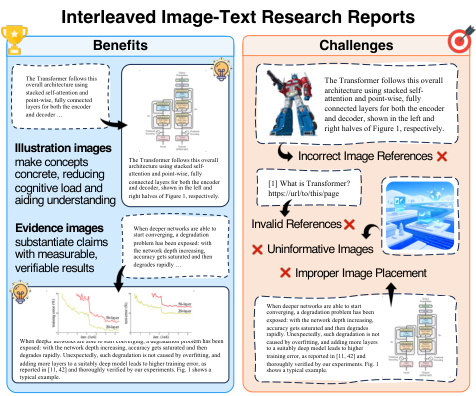
- Illustration(설명용) — 개념을 그림으로 구체화해 이해를 돕는다. "Transformer 구조"를 글로만 설명하는 대신 도식을 보여주는 식.
- Evidence(근거용) — 수치·결과를 차트로 제시해 주장을 입증한다. "성능이 떨어진다"가 아니라 떨어지는 곡선 그 자체.
그리고 이 이미지를 보고서에 넣는 방법도 두 갈래로 갈린다. Deep-Reporter의 그림이 이 분기를 정확히 보여준다.
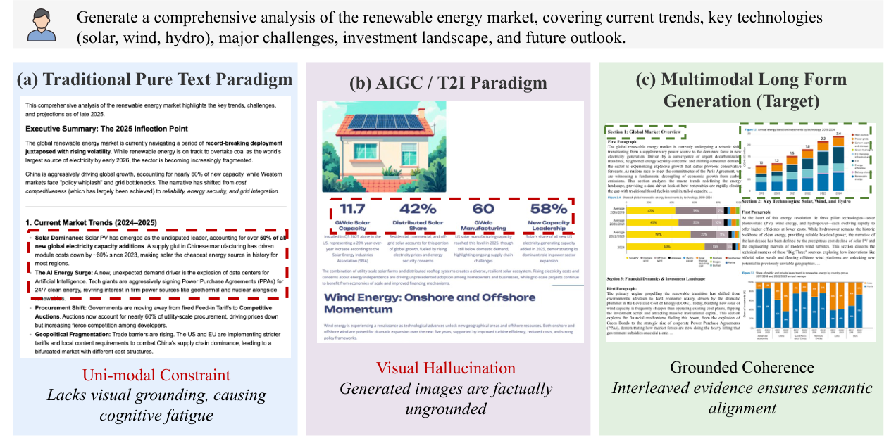
이미지를 만들 것인가(generate), 가져올 것인가(retrieve). 데이터로부터 차트를 그려내는 쪽은 정확하지만 표현이 차트에 한정되고, 웹에서 실제 이미지를 가져오는 쪽은 풍부하지만 환각·정합성 위험이 따른다. 아래 Part 2·3은 각각의 갈래를, Part 4는 둘을 합치고 검증까지 붙인 시스템을 본다.
Part 2 — 이미지를 만든다: 차트 생성
문제의식. 딥리서치 프레임워크는 학계·산업 모두 "predominantly focus on generating textual content"다. Multimodal DeepResearcher는 정면으로 묻는다 — LLM이 처음부터 글과 차트가 번갈아 짜인(text-chart interleaved) 보고서를 통째로 생성하게 할 수 있는가? 개별 차트는 코딩으로 그릴 수 있지만, 그 차트를 텍스트 문맥에 자연스럽게 엮을 표현(representation)이 없다는 게 진짜 병목이다.
핵심 제안. Formal Description of Visualization(FDV) — 차트를 구조화된 텍스트로 기술하는 표현이다. grammar of graphics 이론에서 영감을 받아 시각화를 layout·scale·data·marks 네 관점으로 적는다. 이렇게 하면 LLM이 사람 전문가의 시각화를 in-context learning으로 배우고, 다시 다양한 고품질 차트로 생성할 수 있다.
작동 흐름. FDV 위에서 네 단계로 돈다.
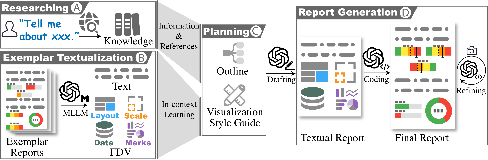
- Researching — 검색·추론으로 주제 정보를 모은다.
- Exemplar textualization — 사람 전문가의 멀티모달 보고서를 FDV로 옮겨 in-context 예시로 삼는다.
- Planning — 내용 outline과 시각화 스타일 가이드를 정한다.
- Multimodal generation — 초안 작성 → 코드 생성 → 차트 반복 개선으로 최종본을 낸다.
결과. 동일한 Claude 3.7 Sonnet으로 baseline(DataNarrative) 대비 82% overall win rate. 생성되는 차트도 막대·선에 그치지 않고 stacked area, Sankey, infographic, 타임라인 막대, 파이 등으로 다양하다.
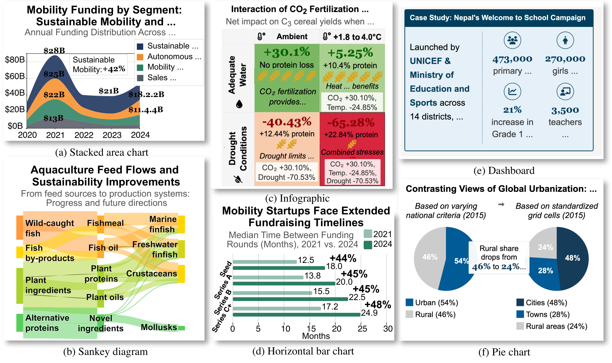
한계. 모든 시각 요소를 코드로 그릴 수 있는 차트로 환원한다. 데이터 기반 차트에는 강하지만, 실제 사진·다이어그램·지도처럼 "검색해 와야 하는" 이미지는 다루지 못한다.
Part 3 — 이미지를 가져온다: 멀티모달 검색
문제의식. 차트 생성만으로는 부족하다. 진짜 보고서에는 사진·실측 도표·실제 figure가 들어간다. Deep-Reporter는 text-only 생성과 순수 T2I 생성(환각 문제)을 모두 비판하며, 웹에서 실제 시각 근거를 검색·통합하는 길을 택한다. 다만 텍스트 기반 agentic search를 멀티모달로 확장하는 데 세 가지 난제가 있다 — agentic multimodal retrieval, coherent multimodal long-form generation, 그리고 evaluation.
핵심 제안. 멀티모달 정보를 수집하는 multi-agent 프레임워크 + "Checklist-Guided Incremental Synthesis" 합성 메커니즘. 보고서 구조를 "Semantic Anchors"로 형식화하고, 문맥을 누적 갱신하며 글과 이미지가 일관되게 interleave되도록 한다.
작동 흐름. planning → multimodal information seeking → incremental writing의 3축으로, 텍스트·시각 passage를 반복 검색하고 고가치 근거만 필터링해 점진적으로 작성한다.
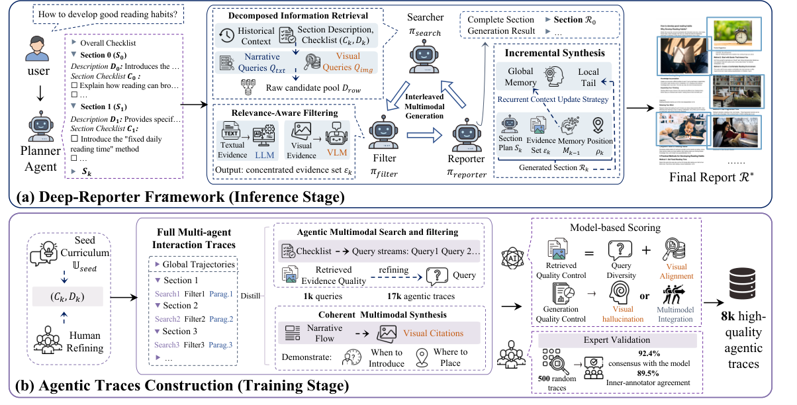
결과. open-weight 모델 학습을 위해 8K개 고품질 expert trajectory를 큐레이션하고, 평가용으로 정적 멀티모달 sandbox(95K 이미지, 108M text chunk; 보고서당 평균 102 이미지·168 chunk가 ground-truth 근거)를 구축했다. RAG baseline을 크게 앞선다.
한계. 검색 기반이라 코퍼스 품질·검색 정밀도에 성능이 묶이고, 검색해 온 이미지가 본문 주장과 실제로 정합한지(image-text consistency)는 여전히 까다로운 검증 대상이다 — 바로 다음 Part의 주제다.
Part 4 — 둘 다, 그리고 검증
생성과 검색은 양자택일이 아니다. 두 연구가 둘을 합치고 거기에 검증을 더한다.
TVIR — 검색 이미지 + 생성 차트, 그리고 dual-path 평가
문제의식. 기존 벤치마크는 text-only이거나 시각 요소가 약하다. TVIR은 딥리서치를 아예 "Text--Visual Interleaved Report Generation" 문제로 정의하고, 시각 요소가 특정 분석 sub-goal에 의미적으로 결속되도록 강제한다(사후에 갖다 붙이는 게 아니라).
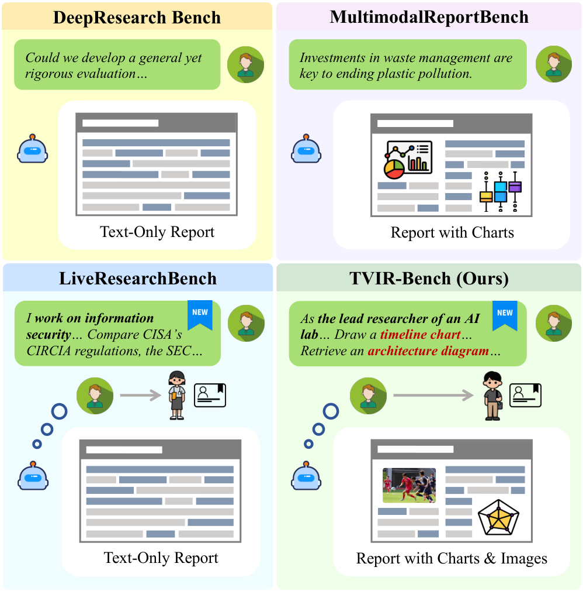
핵심 제안. ① 100개 expert-curated 태스크의 TVIR-Bench, ② Planner·Visual Asset Instantiation·Writer·Polisher로 구성된 계층적 multi-agent baseline(이미지 검색 + 차트 생성을 둘 다 수행), ③ dual-path 평가 — Textual Assessment(citation grounding·logical consistency·analytical depth)와 Visual Assessment(figure quality·chart fidelity·cross-modal alignment).
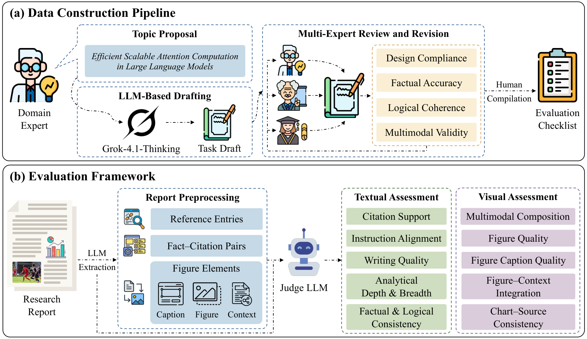
결과. 9개 딥리서치 시스템 실험에서 핵심 통찰 하나 — 현재 LLM은 텍스트 유창성엔 강하지만 "decorative" 시각을 "evidential" 시각보다 우선하는 경향이 있다. 그럴듯하지만 근거가 안 되는 그림을 넣는다는 것.
Ptah — Visual Working Memory와 verifier로 신뢰성을 건다
문제의식. 딥리서치는 (1) open-endedness(정답이 없어 검증이 어려움)와 (2) multimodal interleaving 두 난제를 동시에 안는다. 기존 파이프라인은 단계별 검증이 없어 초반 노이즈가 누적되고, 이미지 통합을 "post-hoc decorative step"로 취급한다.
핵심 제안. Planning·Research·Writing 3단계 harness. 검색한 이미지를 Visual Working Memory에 source-aligned 상태로 유지하다가 보고서에 배치하고, 각 단계 사이에 verifier agent가 acceptance function으로서 factual grounding·citation fidelity·cross-modal consistency를 통과시켜야 다음으로 넘어간다.
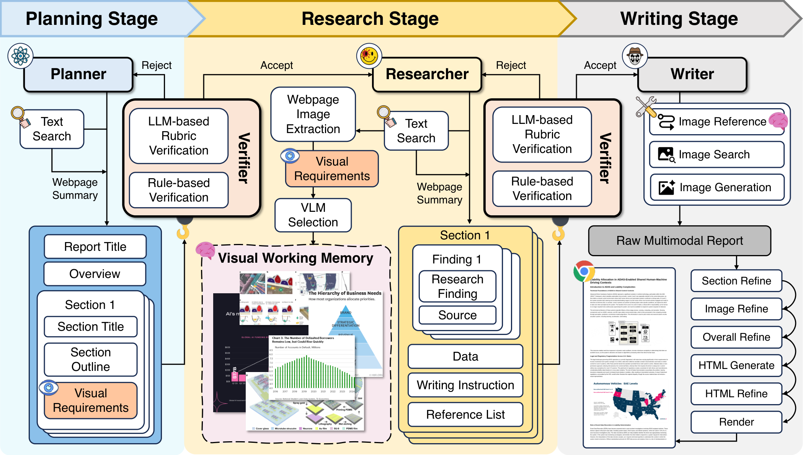
작동 흐름. Plan(텍스트 구조 + 의도한 visual evidence 명세) → Research(claim-grounded 근거·인용·수치·시각 후보를 inspectable artifact로) → Write(declarative multimodal tool로 interleaved 보고서 작성). 전 구간에 verifier hook.
결과. image-level·presentation-level 평가를 더한 PtahEval로, 강한 baseline 대비 더 신뢰할 수 있고 시각적으로 유용한 사람-대면 보고서를 생성. 검색 이미지와 생성 차트를 모두 다룬다.
한계(TVIR·Ptah 공통). 검증·평가 모두 결국 LLM judge에 의존하고, "어떤 그림이 정말 evidential한가"의 판단 자체가 모델 능력에 묶인다.
Part 5 — 어떻게 평가하나
문제의식. open-ended 보고서는 gold answer가 없어 평가가 어렵다. MMDeepResearch-Bench는 멀티모달 딥리서치를 integrated(통합) 능력과 atomic(기초) 능력 양쪽에서 재는 통일 벤치마크를 만든다.
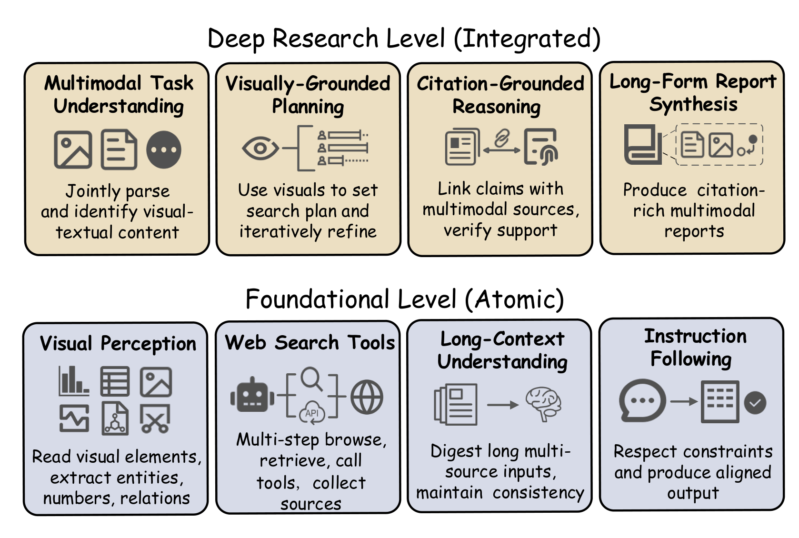
핵심 제안. 140개 expert-crafted 태스크(Daily/Research 두 regime, 21개 도메인). 각 태스크는 image-text bundle로 패키징된다. 평가 프레임워크는 세 모듈 — FLAE(report 품질), TRACE(citation grounding·출처 품질), MOSAIC(text-image 일관성). 특히 Visual Evidence Fidelity(VEF)는 task별 textualized visual ground truth에 대해 PASS/FAIL hard 제약을 걸어, 시각 데이터를 오독하거나 환각하면 책임을 묻는다.
결과. 25개 SOTA 시스템 평가에서 writing quality·citation discipline·multimodal grounding 사이의 persistent trade-off가 드러난다 — 셋을 동시에 잘하는 시스템이 드물다.
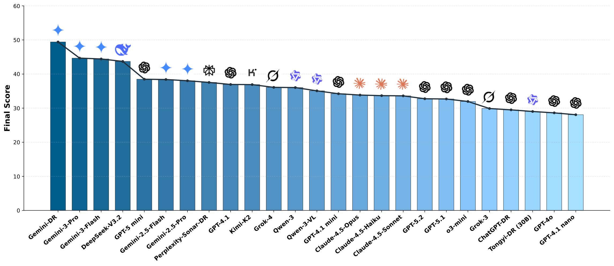
Part 6 — 사람마다 다른 시각화: 개인화
같은 데이터라도 초심자에게는 요약된 한 장이, 전문가에게는 세부 차트 여럿이 맞다. 같은 정보라도 누군가는 표를, 누군가는 그래프를 잘 읽는다. 이 시각화의 개인화를 다루는 두 연구를 본다 — 다만 둘 다 딥리서치가 아니라 인접한 HCI·교육 영역이라는 점이 중요하다.
Drillboards — expertise에 맞춰 펼쳐지는 대시보드
문제의식. 대시보드는 "designed for a specific audience and purpose, making them essentially immutable" — 특정 독자용으로 고정돼 있다. 같은 데이터를 보더라도 독자의 expertise·관심·들일 노력이 다른데도.
핵심 제안. drillboards — 차트들을 계층(hierarchy)으로 쌓아, 독자가 drill-down/roll-up으로 원하는 detail 수준까지 펼치거나 접는 적응형 대시보드. 바닥은 모든 차트가 펼쳐진 baseline, 위로 갈수록 차트를 병합해 추상화된다. "novice / intermediate / expert" 같은 사전 정의 레벨도 제공한다.
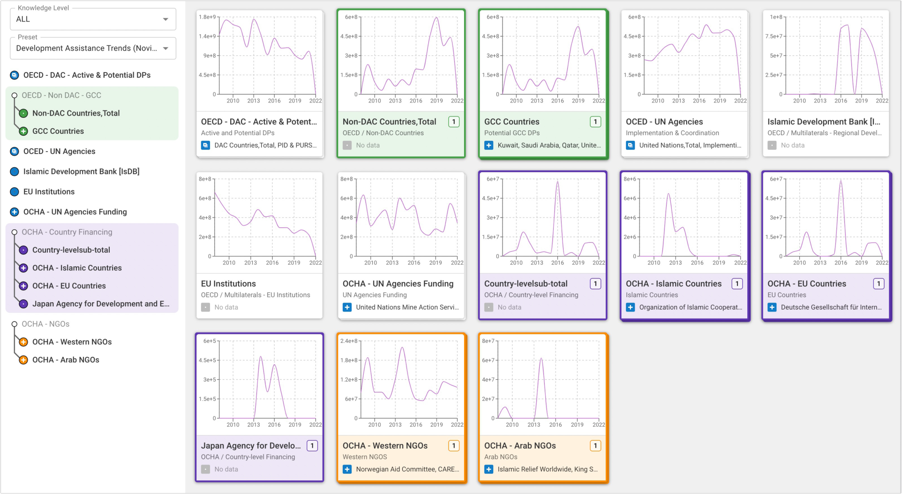
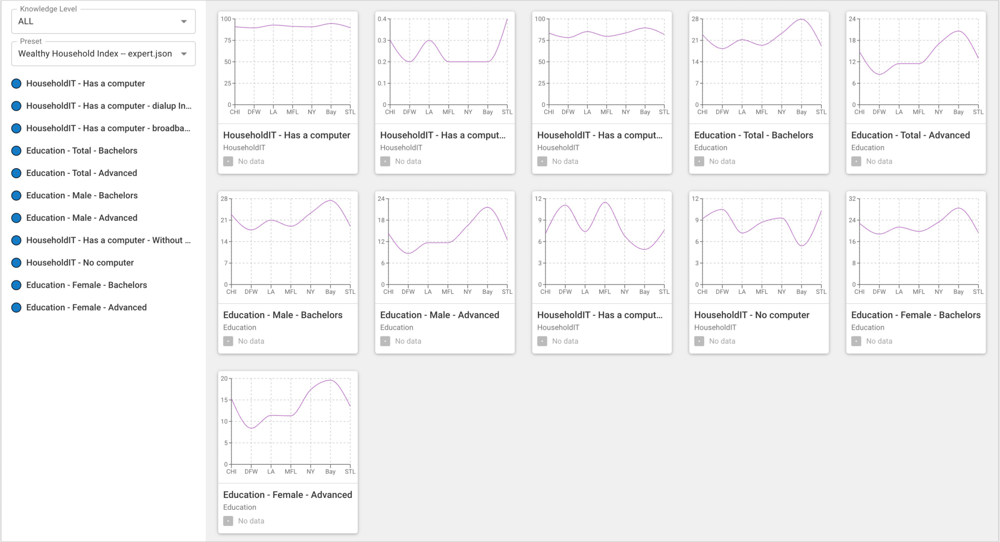
결과. 전문가 3명이 novice용 drillboard를 저작하고 일반 사용자 10명이 평가한 결과, 데이터의 맥락·출처를 전달하는 communication tool로 효과적이었고 novice가 전문가 의도를 빠르게 파악했다.
한계. 저작이 일반 대시보드보다 훨씬 복잡하고, 개인화 단위가 "expertise 레벨"에 머문다(직종·관심사별 figure 선택까지는 아님). 그리고 딥리서치 파이프라인과 무관한 별도 도구다.
StoryLensEdu — 학습자에 맞춘 narrative 리포트
문제의식. 학습 분석 대시보드와 텍스트 리포트는 해석이 어렵고("poor interpretability"), 단조롭고, 일방향이다. 학생마다 데이터가 다른데 같은 형식으로 던져진다.
핵심 제안. 세 에이전트 multi-agent 시스템 — Data Analyst(learning-objective 중심으로 인사이트 추출), Teacher(교육적 가치 평가·맞춤 제안), Storyteller(Hero's Journey 서사 틀로 인사이트를 이야기로 조직). 생성 후 학생이 리포트의 시각·텍스트 요소를 골라 후속 질문하는 interaction 모듈까지.
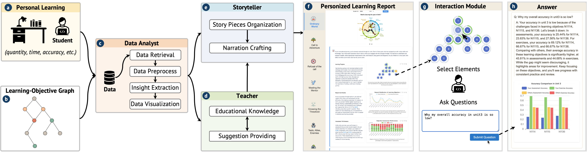
결과. 실제 고교 현장 formative study로 설계하고 실사용자 평가에서 engagement와 학습 과정 이해가 향상됐다. 핵심 기여는 데이터 인사이트와 narrative storytelling을 동적으로 결합해 non-expert를 위한 context-aware 시각화 추천을 자동화했다는 점.
한계. 교육 도메인 특화이고, 개인화가 narrative·설명 수준에 집중된다. 역시 딥리서치 보고서 생성은 아니다.
Part 7 — 열린 질문: 멀티모달 × 개인화의 빈칸
정리하면 두 흐름이 평행선을 달린다.
| 흐름 | 한 일 | 빠진 것 |
|---|---|---|
| 멀티모달 딥리서치 (MMDR · Deep-Reporter · TVIR · Ptah · MMDR-Bench) |
보고서에 이미지를 생성·검색·검증·평가 | 이미지가 모든 독자에게 동일 |
| 시각화 개인화 (Drillboards · StoryLensEdu) |
독자 expertise·배경에 맞춰 시각을 적응 | 주어진 데이터 한 벌만, 딥리서치 아님 |
두 원이 겹치는 가운데 — "독자의 직종·배경·시각 이해 방식에 맞춰, 딥리서치 보고서에 들어갈 figure 자체를 다르게 검색·생성·배치하는" 연구는 아직 비어 있다. 의대생과 환자가 같은 "당뇨 치료 동향"을 물어도, 텍스트뿐 아니라 그림도 달라야 한다. 한쪽엔 기전 다이어그램과 임상시험 forest plot을, 다른 쪽엔 생활 습관 인포그래픽을.
세 가지가 동시에 풀려야 한다. ① 같은 정보를 어떤 형식(표/그래프/다이어그램/사진)으로 줄지의 개인화, ② 어떤 figure를 고를지의 개인화, ③ 그 개인화가 정말 이해를 높였는지의 평가. 멀티모달 평가(VEF·MOSAIC)도, 개인화 평가(reference-free per-user scoring)도 따로는 있지만, 둘을 합친 잣대는 없다.
멀티모달 보고서 생성은 여기까지 왔고, 시각화 개인화도 따로 무르익었다. 둘을 딥리서치 안에서 잇는 자리가 — 지금 비어 있다.